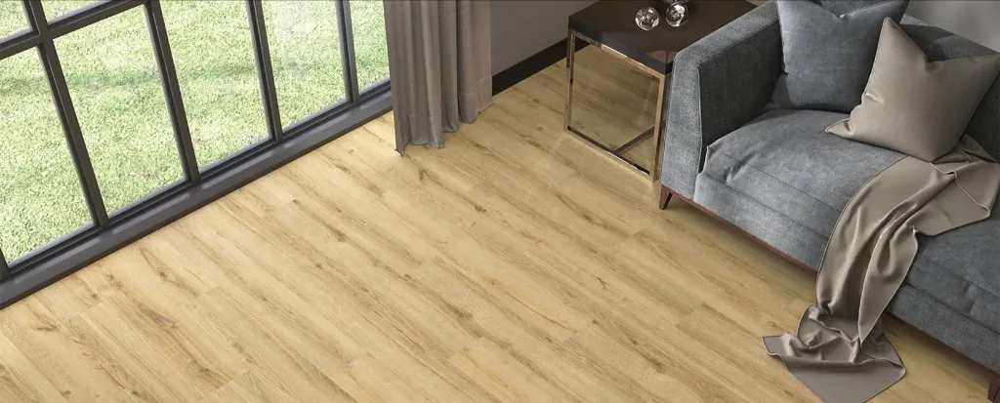
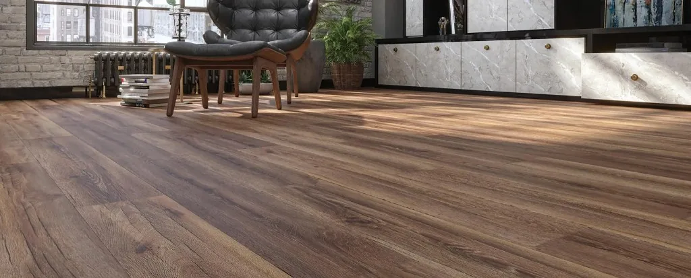
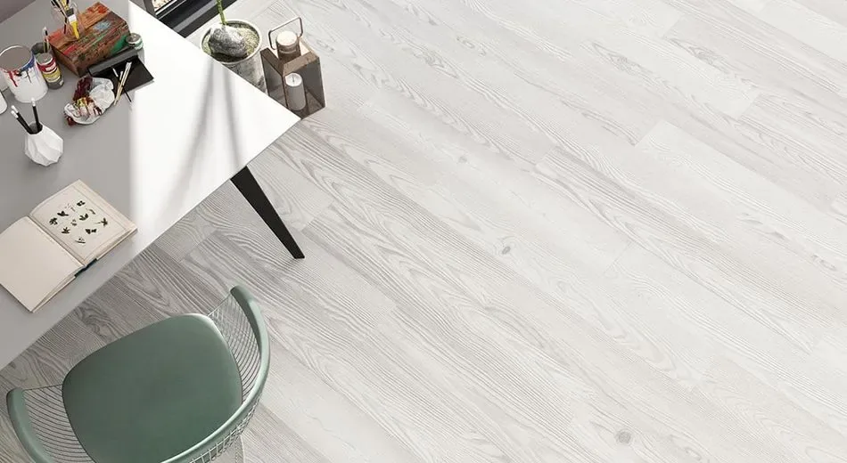
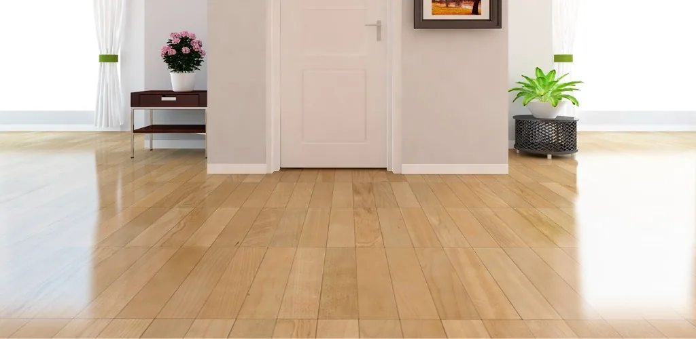
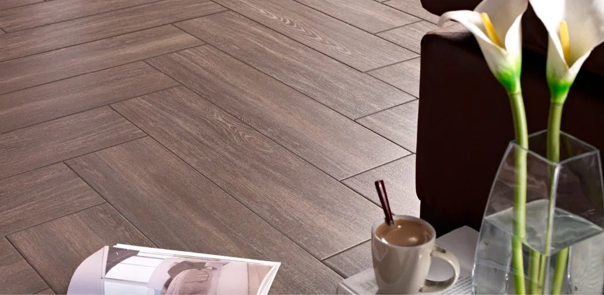
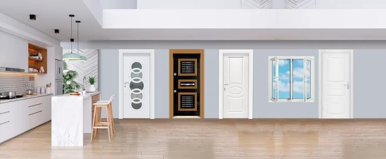
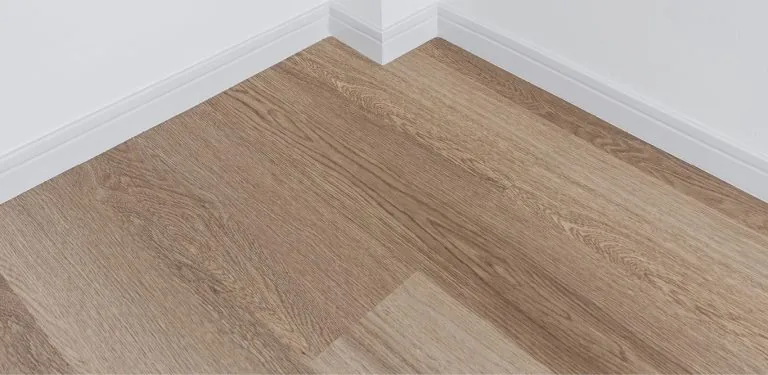
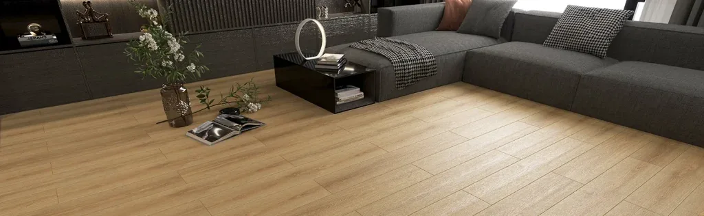

Lineer
Parke dizilimini destekleyen doğal çizgisel ağaç dokuları — daha düzenli ve modern bir görünüm.
AGT parke serilerini Osmaniye’de Emin Kapı’da buluşturuyoruz; ücretsiz keşif ve profesyonel döşeme.
Osmaniye bayii
AGT parke serilerini, üstün kalitesi, geniş model seçenekleri ve antibakteriyel özelliğiyle Osmaniye’de Emin Kapı’da sizlerle buluşturuyoruz. Parke; eviniz, ofisiniz, kafeteryalar, restoranlar, mağazalar ve fabrikalar gibi pek çok alanda beğenilerek tercih edilen, ahşabın doğal ve sıcak etkisini iç mekana taşıyan bir zemin kaplama malzemesi. Islak hacim dışındaki mekanlarda sıklıkla tercih edilen parke, ahşap kökenli bir malzeme olduğu için her tarzda dekorasyonla uyum sağlıyor — en klasik mekandan en modern iç tasarıma kadar geniş bir kullanım alanı buluyor.
Örnekler
Üzerine gelin, tıklayınca tam boy açılır — doku detayını yakından inceleyin.








Parkeler öncelikle kalitesine ve üretim şekline göre ayrılıyor. Bu ayrım içinde masif parke, lamine parke ve laminant parke en çok tercih edilen üç ana grup. Seçenekler arasında en yaygın tercih edileni ise laminant parke modelleri — hem geniş renk ve doku seçeneği sunması hem de kullanım pratikliği sayesinde öne çıkıyor.
| Parke Türü | Yapısı |
|---|---|
| Masif Parke | Tamamı doğal ahşaptan üretilir |
| Lamine Parke | Birden fazla ahşap katmanının birleştirilmesiyle üretilir |
| Laminant Parke | Yüksek yoğunluklu lif levha üzerine dekoratif kaplama uygulanarak üretilir, en çok tercih edilen türdür |
Laminant parke modelleri arasında çam laminant parke, meşe laminant parke gibi farklı ağaç türlerinden üretilmiş geniş bir seçenek yelpazesi bulunuyor. Bu modelleri incelemek, ilk aşamada ürünler arasındaki belirgin farkları tanımanızı sağlıyor. Ardından aynı veya farklı ağaç grubundan üretilen parkeler içinden lineer dokulu ya da hareli ürünler arasında tercih yapmanız gerekiyor.
Doku
Parke dizilimini destekleyen doğal çizgisel ağaç dokuları — daha düzenli ve modern bir görünüm.
Daha oval hatlar; mekana daha naturel bir doku katar. Ambiyansa göre lineer veya hareli tercih edilebilir.
Renk tonları, Osmaniye’de parke döşeme tercihinde önemli bir etken. Akçaağaç ve meşenin açık tonlarından birini seçtiğinizde iç mekanlarınızda aydınlık ve açık renkli bir zemin elde edersiniz. Tam tersine, abanoz, dark walnut veya kiraz gibi koyu renkleri tercih ederek daha karakterli bir zemin oluşturabilirsiniz. Natural ahşap kaplamalı modellerin yanı sıra hafif renklendirilmiş parke çeşitlerini de inceleyebilirsiniz. Rustik alanları seviyorsanız, gölgeleri baskınlaştırılmış ahşap kaplamalar sizin için uygun bir tercih olabilir.
Parke modellerini yalnızca görsel özelliklerine göre seçmek, doğru bir karar vermeniz için yeterli olmuyor. Parkeler zemine uygulandığı için malzemenin dayanıklılığı ve kolay temizlenebilirliği büyük önem taşıyor. Nem ve su direnci, parkenizin kullanım kolaylığı ve ömrü açısından dikkat etmeniz gereken bir diğer unsur.
Doğru ürün seçimi kadar önemli olan bir başka konu ise parkelerin döşenme şekli. Parke döşemeden önce alandaki hareket yönlerinin belirlenmesi gerekiyor — hareket yönüyle aynı doğrultuda döşenen parkeler mekanı daha geniş ve ferah hissettiriyor. Dikdörtgen bir odada uzun kenara paralel döşenen parkeler alanı daha uzun gösterirken, kısa kenara paralel döşenen parkeler mekanda daha düz bir etki yaratıyor.
Geniş seçenekli ürün yelpazemiz sayesinde eviniz, duvarlarınız ve mobilyalarınızla uyumlu parke seçeneklerini, zevkinize ve karakterinize en uygun ürünleri görmek için Emin Kapı’yı ziyaret ederek inceleyebilirsiniz.
Firmamız ve sunduğumuz hizmetler hakkında bilgi almak, ücretsiz keşif talep etmek için lütfen bizi arayınız.
SSS
Laminant parke genellikle ıslak hacim harici mekanlarda tercih edilir; banyo ve benzeri sürekli su ile temas eden alanlarda kullanımı önerilmez.
Masif parke tamamı doğal ahşaptan üretilir, lamine parke birden fazla ahşap katmanından oluşur, laminant parke ise yüksek yoğunluklu lif levha üzerine dekoratif kaplama uygulanarak üretilir ve en çok tercih edilen seçenektir.
Parkenin alandaki hareket yönüyle aynı doğrultuda döşenmesi mekanı daha ferah gösterir. Dikdörtgen bir odada uzun kenara paralel döşeme mekanı daha uzun, kısa kenara paralel döşeme ise daha düz bir etki yaratır.
Evet, Osmaniye ve çevresinde parke döşeme talepleriniz için ücretsiz keşif hizmeti sunuyoruz. Detaylı bilgi ve fiyat teklifi için bizi arayabilirsiniz.
AGT Parke
Model seçimi, metraj ve fiyat teklifi — 09:00–17:00.